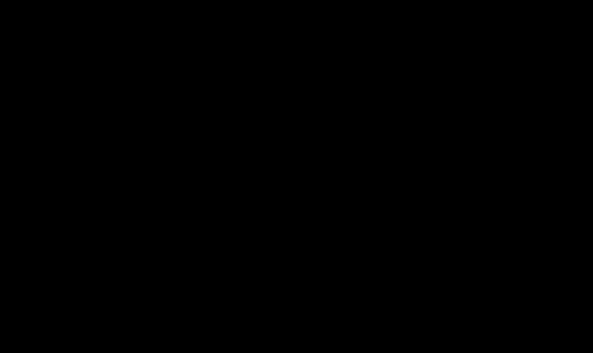

プロジェクトの目標
大学の地形観測用の小型無人飛行機"Maya"に障害物回避機能を持たせることがこのプロジェクトの目標であった。
障害物回避の達成にはさまざまな手法があるが、私たちの班は強化学習を用いることとなった。
成果
もともとの"Maya"の制御プログラムはSimulinkにて実装されていたため、強化学習でもMatlab/Simulinkを用いることとした。
Matlabを用いた強化学習には主に２通りの方法があり、一つがmファイルにクラスを作成し、そこで学習を行うものである。
そして二つ目がSimulinkを活用する方法である。
まず手始めに、小型飛行機セスナをモデルとした垂直方向のみを考慮したクラスをmファイルで作成し、強化学習をさせた。
このモデルではactionとしてエンジンスロットルと昇降舵を用いている。これらの操作量はローレベルと言われ、機体の挙動に直接影響する。
緑の楕円は障害物を示し、赤い点はゴール地点を示している。

ローレベルの操作量のため、エージェントはまず飛ぶことから学習しなくてはならず、学習は非常に不安定であった。
上のgif画像でも度々機体が急激に上に向いてエピソードが終了していることが確認できる。
このモデルのGithubのレポジトリはこちら